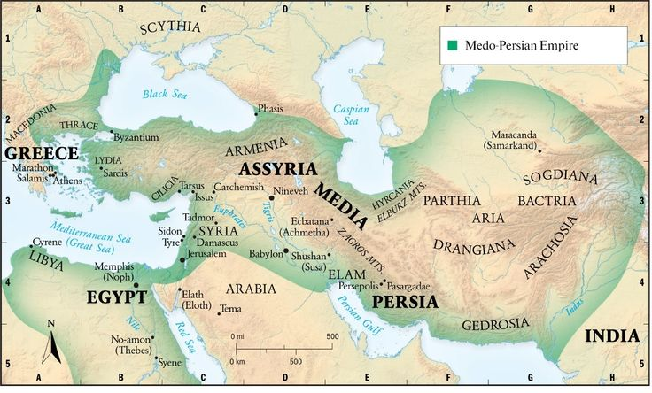
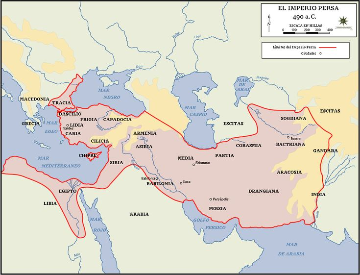

Resumen
1. Multiculturalidad y Sincretismo Cultural
El imperio estaba formado por una amalgama de pueblos: persas, medos, elamitas, babilonios, egipcios, judíos, lidios, tracios, sogdianos, bactrianos, griegos jonios, entre muchos otros. En lugar de imponer una cultura hegemón… El Imperio aqueménida, fundado en el siglo VI a. C., fue una de las entidades políticas más vastas de la antigüedad, abarcando territorios en tres continentes: Asia, África y Europa. Su geografía fue un factor determinante en su desarrollo político, económico, militar y cultural. A continuación se ofrece un análisis profundo y detallado de su extensión territorial, accidentes geográficos, clima, regiones principales, recursos naturales y su impacto sobre la organización del imperio.1. Extensión Territorial
En su apogeo, el Imperio aqueménida se extendía desde el río Indo (actual Pakistán) hasta Tracia y Macedonia (actual Grecia del norte y Bulgaria), y desde el Cáucaso y el mar Caspio hasta el desierto del Sahara en Egipto. Esta vastedad superaba los 7.5 millones de km², lo que lo convirtió en el imperio más extenso del mundo antiguo hasta ese momento.2. Regiones y Provincias Principales
El imperio estaba dividido en satrapías o provincias, cada una con una capital regional, una administración propia y un gobernador (sátrapa). Cada región tenía características geográficas distintas:
Persis (actual Fars, Irán): Región montañosa y árida, cuna de los persas. Clima seco, con altiplanos y valles fértiles regados por ríos estacionales.
Media (norte de Irán): Zona de montañas (Zagros) con clima más templado y abundantes pastos.
Babilonia (actual Irak): Llanura aluvial del Tigris y Éufrates. Fertilidad extrema gracias al riego artificial. Centro agrícola y comercial clave.
Elam (suroeste de Irán): Región entre montañas y llanuras, con cultura milenaria y rica tradición administrativa.
Egipto: Dominado por el valle del Nilo. Clima desértico, pero con una franja fértil gracias a las inundaciones del río.
Lidia (oeste de Anatolia): Región montañosa y costera con influencia griega, rica en minerales y con importantes ciudades comerciales.
Tracia y Macedonia: Territorio europeo de bosques, ríos y montañas. Última frontera occidental del imperio.
India noroccidental (Gandhara, Punjab): Territorio montañoso y fluvial, con selvas, pasos himalayos y grandes ríos como el Indo.
Bactriana y Sogdiana (Asia Central): Valles irrigados entre desiertos y montañas (Hindú Kush, Pamir). Centro de rutas comerciales y militares.
Armenia, Capadocia y Cilicia: Zonas montañosas con mesetas fértiles, claves para el paso entre Mesopotamia y Anatolia.
Arabia oriental: Territorios desérticos habitados por tribus seminómadas. Dominio costero del golfo Pérsico.
3. Relieve y Accidentes Geográficos
Montañas: Las cordilleras del Zagros, Elburz, Cáucaso, Taurus y el Hindú Kush servían como barreras naturales, pero también como rutas estratégicas para el comercio y la guerra.
Desiertos: El desierto sirio, el Dasht-e Kavir y el Dasht-e Lut eran regiones áridas que separaban y protegían centros urbanos.
Valles y llanuras: Babilonia y Egipto eran las dos regiones de llanura aluvial más fértiles. También había llanuras en el Indo y Sogdiana.
Mesetas: La meseta iraní fue el corazón geográfico y cultural del imperio. Proporcionaba seguridad y clima templado.
| 1 | 2 | 3 | 4 | 5 | Montana | Desierto | Valle | Mesetas | Llanuras |
|---|

4. Ríos Principales
Tigris y Éufrates: Irrigaban la rica tierra de Mesopotamia. Cruciales para la agricultura, la navegación y el comercio.Nilo: Fuente de vida de Egipto. Su ciclo anual determinaba la economía agrícola.
Indo: Riego de los campos del Punjab y base para ciudades como Taxila.
Amu Darya y Sir Darya: Cruciales en Asia Central, donde formaban oasis en medio de desiertos.
Araxes y Kura: Ríos importantes en el Cáucaso y Armenia.
5. Climas del Imperio
6. Recursos Naturales
Minerales: Oro en Lidia y Bactria; plata en Armenia; cobre y estaño en Anatolia; hierro en Media. Agricultura: Trigo, cebada, vid, dátiles, lino, algodón. Cultivos intensivos en Egipto, Babilonia, el Indo y Elam. Ganadería: Caballos de Nisaia (Media), camellos en Arabia, bueyes en Babilonia. Bosques: Cedros del Líbano y madera en Tracia y Armenia. Piedra: Caliza, basalto, mármol y alabastro para la construcción monumental. Agua: Ríos, qanats (canales subterráneos) y sistemas de irrigación artificial en regiones áridas.7. Rutas Comerciales y Geografía Estratégica
La ubicación geográfica del imperio le permitía controlar rutas clave: Ruta del Golfo Pérsico al mar Rojo. Ruta del Indo hacia Asia Central y China (proto-Ruta de la Seda). Ruta de Anatolia hacia el Egeo. Camino Real de Susa a Sardes (2500 km). Estas rutas servían para el comercio, la movilización militar y la circulación cultural. El imperio construyó puentes colgantes, ferris fluviales, caminos empedrados, postas y almacenes para facilitar el transporte.8. Impacto de la Geografía en la Administración
La gran diversidad geográfica exigió una administración descentralizada pero bien conectada. Las capitales estaban ubicadas en zonas elevadas, protegidas por la geografía y con acceso a agua. Los sátrapas debían adaptarse a las condiciones geográficas de su región: oasis, valles, costas, llanuras aluviales, etc. El control de los pasos montañosos, como los Zagros y el Cáucaso, era clave para evitar invasiones y garantizar la cohesión territorial.9. Fronteras Naturales
Este: Himalayas y el valle del Indo.
Oeste: Mar Egeo y Tracia.
Norte: Cáucaso, mar Caspio, estepas escita
Sur: Desiertos arábigos, mar Rojo y golfo Pérsico.
Estas fronteras naturales ayudaban a proteger el imperio, pero también demandaban vigilancia y mantenimiento militar constante.
10. Legado Geográfico
Muchas divisiones regionales del imperio se conservaron en estructuras posteriores: romanas, bizantinas, sasánidas e islámicas. El modelo de organización adaptado a la geografía fue precursor de imperios futuros. El sistema de qanats influenció las técnicas de irrigación en Asia, el Magreb y Andalucía. Las rutas y mapas desarrollados por los persas siguieron usándose durante siglos.